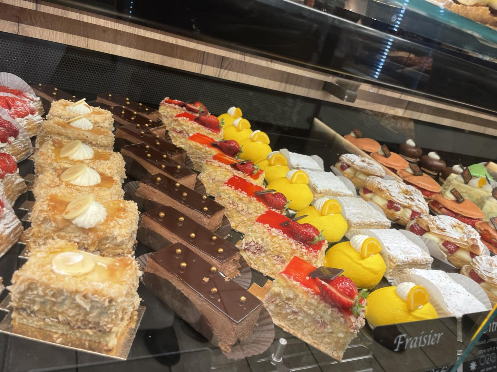
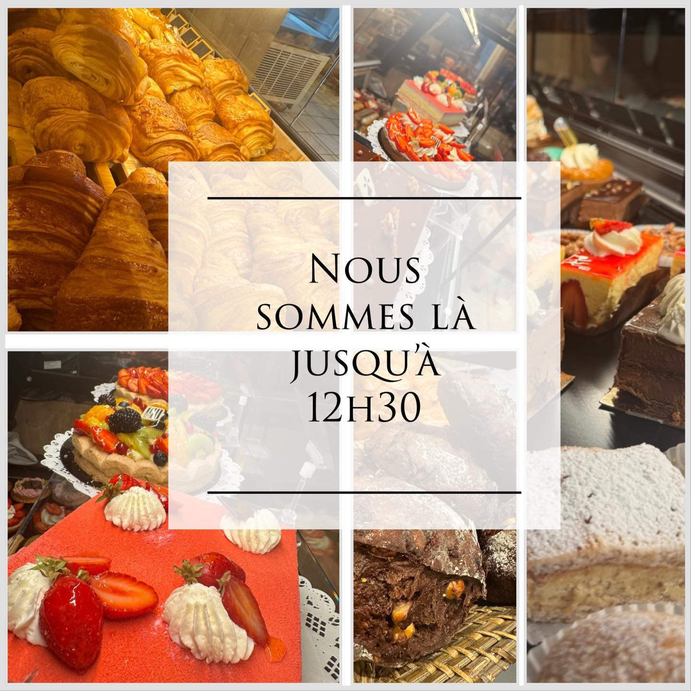

Chargement...
Boulangerie artisanale familiale
Aujourd'hui
Telephone
Adresse
Essentiel
La boulangerie de village, simple, bonne et facile a trouver.
Pains du quotidien, viennoiseries maison, patisseries et accueil de proximite au coeur de Saint-Pol-de-Leon.
02 98 69 02 19
10 rue Cadiou, 29250 Saint-Pol-de-Leon
Pains, viennoiseries, patisseries, commandes

Nos produits
Ce que l'on vient chercher ici.
Une lecture simple, sans surcharge, pour voir rapidement l'essentiel de la boulangerie.

Viennoiseries
Pour le matin et les habitudes du quotidien.
- Croissants
- Pains au chocolat
- Gourmandises du matin

Snacking
Une pause dejeuner rapide, lisible et pratique.
- Sandwiches
- Bouchees salees
- Petite restauration

Patisseries
Des desserts de vitrine pour le gouter ou le week-end.
- Entremets
- Fruits rouges
- Gateaux individuels

Commandes
Pour les anniversaires et les moments a partager.
- Gateaux
- Creations festives
- Selon demande
Pains du quotidien
La page met l'accent sur les visuels disponibles, mais la boulangerie reste
avant tout une maison de pains, viennoiseries et produits de tous les jours.
Pour une demande precise ou une commande, le plus simple reste d'appeler.

A propos
Une boulangerie de commune, artisanale et proche de ses clients.
Le site est pense comme la boutique : clair, simple et accueillant. On y trouve tout de suite les informations utiles, sans effets inutiles.
- Une presence locale facile a identifier
- Des produits du quotidien et des douceurs maison
- Un contact rapide par telephone et un acces simple
Horaires et contact
Les informations critiques, tout de suite.
Horaires, telephone, adresse et acces sont prioritaires parce que la majorite des clients viennent depuis leur telephone.
Horaires
Lundi
Ferme
Mardi
07:00 - 19:00
Mercredi
07:00 - 19:00
Jeudi
07:00 - 19:00
Vendredi
07:00 - 19:00
Samedi
07:00 - 19:00
Dimanche
07:00 - 12:30
Contact
Telephone
02 98 69 02 19
Adresse
10 rue Cadiou, 29250 Saint-Pol-de-Leon